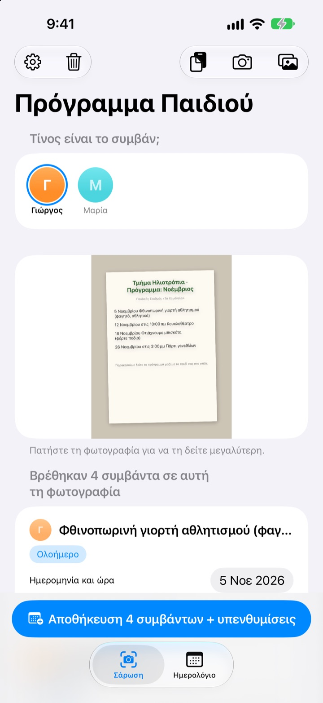
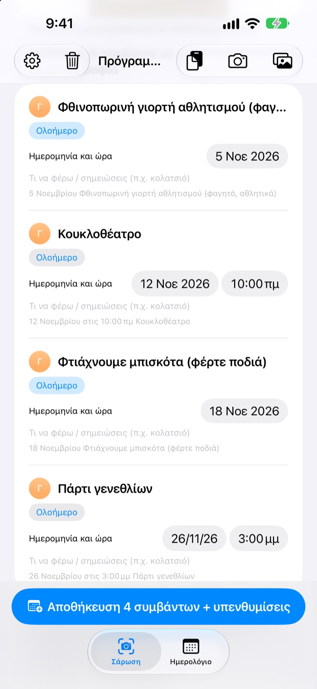
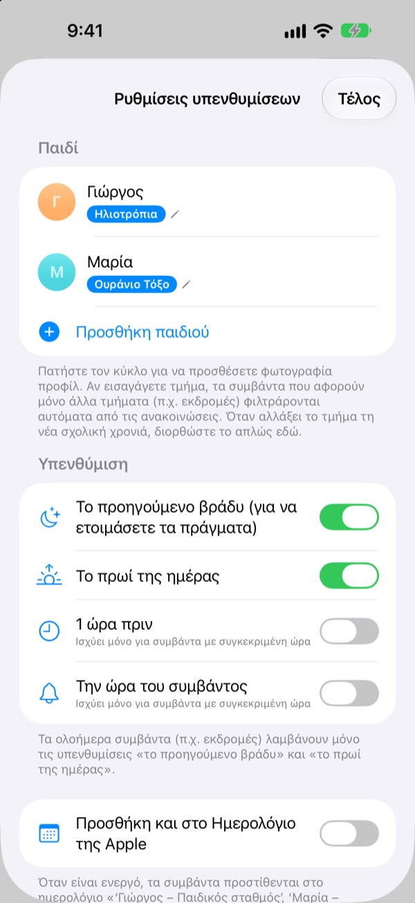
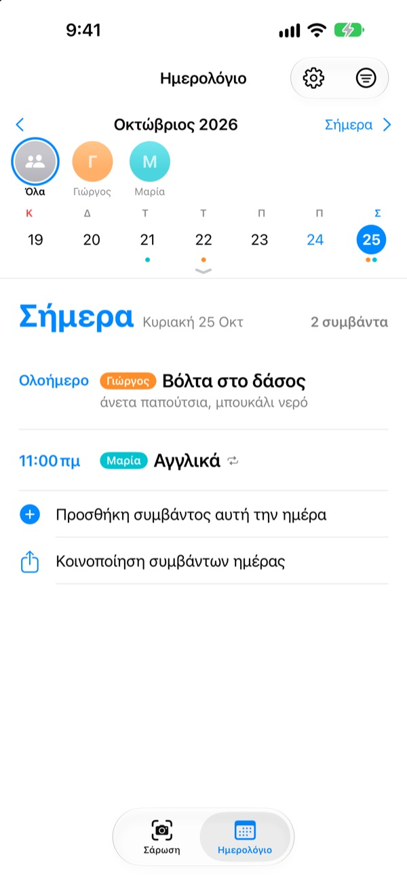

Μια φωτογραφία αρκεί.
Θα σας θυμίσουμε.
Βγάλτε φωτογραφία το μηνιαίο πρόγραμμα που σας δίνει ο παιδικός. Το Πρόγραμμα Παιδιού διαβάζει ημερομηνίες, ώρες και ονόματα δραστηριοτήτων και τα προσθέτει όλα μαζί. Το βράδυ πριν από την εκδρομή, στις 8, έρχεται υπενθύμιση: μην ξεχάσετε το φαγητό.
Όλες οι λειτουργίες είναι δωρεάν. Οι φωτογραφίες δεν φεύγουν από το iPhone σας.

Φωτογραφίστε μια ανακοίνωση
Ορίστε ένα δείγμα ανακοίνωσης με τις δραστηριότητες του επόμενου μήνα. Φωτογραφίστε το και, όπως στην εφαρμογή, βγαίνουν οι δραστηριότητες και τι χρειάζεται, ενώ οι υπενθυμίσεις προγραμματίζονται στις ώρες που διαλέγετε.
Ακόμα αντιγράφετε τις ανακοινώσεις του παιδικού στο ημερολόγιο;
Πέντε, έξι δραστηριότητες τον μήνα, και κάθε φορά χρειάζεται κάτι άλλο: φαγητό, φόρμα γυμναστικής, ποδιά. Το πρόγραμμα στο ψυγείο δεν το βλέπετε στον δρόμο για τη δουλειά, και το θυμάστε πάντα το ίδιο πρωί. Το Πρόγραμμα Παιδιού κάνει εκείνο το χαρτί συμβάντα και υπενθυμίσεις.
Μία φωτογραφία, όλος ο μήνας
Μηνιαίος πίνακας, ενημερωτικό σημείωμα ή μεμονωμένη ανακοίνωση: φωτογραφίστε ή διαλέξτε από τη βιβλιοθήκη και διαβάζονται ημερομηνίες, ώρες και ονόματα δραστηριοτήτων. Μπορείτε και να επικολλήσετε μήνυμα από τη νηπιαγωγό· λέξεις όπως «αύριο» ή «αυτή την Παρασκευή» γίνονται κανονικές ημερομηνίες.
Πριν την αποθήκευση διορθώνετε τίτλο, ημερομηνία ή τι χρειάζεται, και σύρετε για να σβήσετε ό,τι περισσεύει. Βάλτε το τμήμα του παιδιού και οι δραστηριότητες μόνο για άλλα τμήματα φιλτράρονται.

Από το προηγούμενο βράδυ, υπενθύμιση
Διαλέξτε 20:00 το προηγούμενο βράδυ, 7:30 το πρωί της ημέρας, 1 ώρα πριν ή ακριβώς στην ώρα. Τι χρειάζεται φαίνεται μέσα στην υπενθύμιση, έτσι η τσάντα ετοιμάζεται έγκαιρα.
Με το Ημερολόγιο της Apple, τα συμβάντα μπαίνουν σε ημερολόγιο με το όνομα του παιδιού, χωρίς ποτέ διπλές εγγραφές.

Πολλά παιδιά, όλη η οικογένεια
Κάθε παιδί έχει το δικό του χρώμα. Δείτε τα όλα μαζί ή ένα ένα· από τα προηγούμενα συμβάντα η εφαρμογή μαντεύει για ποιο παιδί είναι η νέα ανακοίνωση.
Στείλτε σύνδεσμο πρόσκλησης και ο σύντροφος, οι παππούδες ή η μπέιμπι σίτερ βλέπουν και αλλάζουν τα ίδια συμβάντα. Ένα widget στην οθόνη Αφετηρίας δείχνει τι έρχεται.

Ξεκινάτε σε τρία βήματα
- 1
Προσθέστε το παιδί
Όνομα και τμήμα. Φωτογραφία προφίλ όποτε θέλετε.
- 2
Φωτογραφίστε την ανακοίνωση
Από μπροστά και με καθαρά γράμματα διαβάζεται καλύτερα.
- 3
Ελέγξτε και αποθηκεύστε
Επιτρέψτε τις γνωστοποιήσεις και οι υπενθυμίσεις έρχονται όποτε ορίσατε.
Πότε έρχονται οι υπενθυμίσεις
- 20:00 το προηγούμενο βράδυ
- Για τα πράγματα. Ενεργό από την αρχή
- 7:30 το πρωί της ημέρας
- Τι έχει σήμερα. Ενεργό από την αρχή
- 1 ώρα πριν
- Μόνο για δραστηριότητες με ώρα
- Την ώρα του συμβάντος
- Μόνο για δραστηριότητες με ώρα
Οι ολοήμερες δραστηριότητες, όπως μια εκδρομή, έχουν μόνο την υπενθύμιση του προηγούμενου βραδιού και του πρωινού. Ενεργοποιήστε ή απενεργοποιήστε την καθεμία όποτε θέλετε στις ρυθμίσεις.
Όλες οι λειτουργίες είναι δωρεάν
Δωρεάν
- Ανάγνωση δραστηριοτήτων από φωτογραφίες και μηνύματα
- Διορθώσεις πριν την αποθήκευση, φίλτρο άλλων τμημάτων
- Υπενθυμίσεις το βράδυ πριν, το πρωί, 1 ώρα πριν και στην ώρα
- Ένα χρώμα για κάθε παιδί και κοινό ημερολόγιο
- Συγχρονισμός με το Ημερολόγιο της Apple
- Κοινή χρήση με την οικογένεια μέσω συνδέσμου
- Widget στην οθόνη Αφετηρίας
Στηρίξτε τον δημιουργό
- Από τις ρυθμίσεις μπορείτε να αφήσετε ένα μικρό φιλοδώρημα, όσο θέλετε
- Το φιλοδώρημα δεν ξεκλειδώνει τίποτα. Η εφαρμογή δουλεύει το ίδιο
Χωρίς διαφημίσεις, χωρίς συνδρομή.
Συχνές ερωτήσεις
Τι φωτογραφίες μπορώ να χρησιμοποιήσω;
Μηνιαία προγράμματα σε πίνακα, ενημερωτικά σημειώματα γραμμένα σε κείμενο και μεμονωμένες ανακοινώσεις ή φυλλάδια. Μια φωτογραφία από μπροστά, με καθαρά γράμματα, διαβάζεται καλύτερα. Μπορείτε επίσης να διαλέξετε πολλές φωτογραφίες και να τις σαρώσετε μαζί.
Λείπουν κάποιες δραστηριότητες ή ένας τίτλος έχει λάθος.
Τα χειρόγραφα ή τα αχνά γράμματα διαβάζονται δύσκολα. Διορθώστε τίτλο, ημερομηνία ή τι χρειάζεται κατευθείαν στη λίστα, ή σύρετε για να σβήσετε ό,τι δεν θέλετε. Μια δραστηριότητα που λείπει την προσθέτετε με «Χειροκίνητη προσθήκη συμβάντος» στην καρτέλα Σάρωση και αποθηκεύετε ξανά.
Δεν μου έρχονται υπενθυμίσεις.
Ελέγξτε στις Ρυθμίσεις > Γνωστοποιήσεις > Πρόγραμμα Παιδιού ότι οι γνωστοποιήσεις επιτρέπονται. Στις ρυθμίσεις της εφαρμογής (⚙️) διαλέγετε επίσης ποιες υπενθυμίσεις θέλετε.
Εμφανίζονται δραστηριότητες άλλων τμημάτων.
Γράψτε στις ρυθμίσεις το όνομα του τμήματος του παιδιού και οι δραστηριότητες μόνο για άλλα τμήματα θα φιλτράρονται. Αν αλλάξει τμήμα τη νέα χρονιά, το διορθώνετε μόνο εκεί.
Έχω πάνω από ένα παιδί.
Στις ρυθμίσεις προσθέτετε όσα παιδιά θέλετε, το καθένα με φωτογραφία προφίλ. Στη σάρωση διαλέγετε για ποιο παιδί είναι: στο ημερολόγιο κάθε παιδί έχει το χρώμα του, με κοινή προβολή και φίλτρο ανά παιδί.
Πώς μοιράζομαι το πρόγραμμα με τον σύντροφό μου;
Στις ρυθμίσεις, στην ενότητα «Κοινή χρήση προγράμματος», πατήστε «Πρόσκληση» και στείλτε τον σύνδεσμο με μήνυμα. Όποιος τον λάβει βλέπει και αλλάζει όλα τα παιδιά και τα συμβάντα, και οι αλλαγές από οποιαδήποτε πλευρά εμφανίζονται αμέσως και στους δύο. Δεν έχει σχέση με την Οικογενειακή κοινή χρήση της Apple.
Υπάρχουν άλλοι τρόποι κοινής χρήσης;
Με το κουμπί κοινής χρήσης στην καρτέλα Ημερολόγιο στέλνετε αρχείο Πρόγραμμα Παιδιού, αρχείο ημερολογίου (.ics) ή σύνοψη σε κείμενο. Με την επιλογή «Προσθήκη και στο Ημερολόγιο της Apple» δημιουργείται ημερολόγιο με το όνομα του παιδιού· αν το μοιραστείτε μέσω iCloud στην εφαρμογή Ημερολόγιο, ενημερώνεται και η οικογένεια.
Στέλνονται κάπου οι φωτογραφίες ή τα συμβάντα μου;
Όχι. Το κείμενο στις φωτογραφίες διαβάζεται εξ ολοκλήρου στη συσκευή και τα δεδομένα μένουν μόνο εκεί. Τα συμβάντα περνούν από το iCloud σας μόνο αν προσκαλέσετε κάποιον μέσω «Κοινή χρήση προγράμματος», και μόνο προς όσους προσκαλέσατε.
Κάποιο πρόβλημα ή κάτι που λείπει; Γράψτε στο leeo@kakao.com. Συνήθως απαντάμε μέσα σε 2–3 ημέρες. Το μοντέλο της συσκευής και η έκδοση iOS μάς βοηθούν.